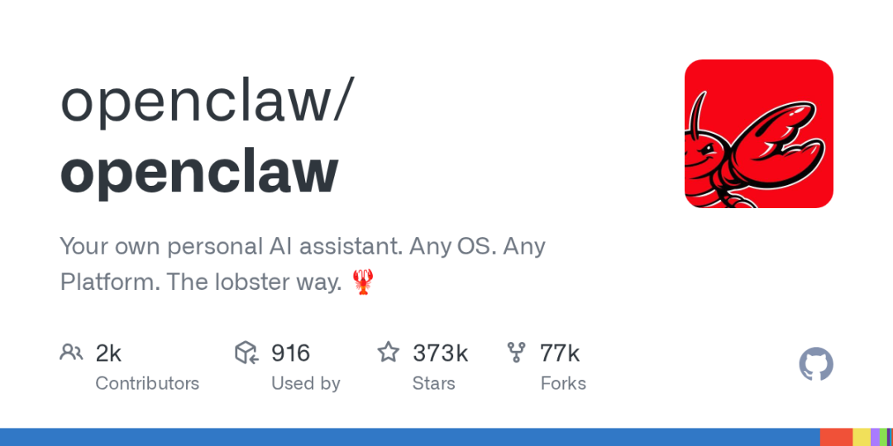

配置改了之后 OpenClaw 启动不了？想恢复之前的配置却忘了改过啥？Git 就是你的「后悔药」——小白也能看懂。
引言
很多 OpenClaw 用户在刚开始接触时，都会遇到这样的场景：
兴致勃勃地改了 openclaw.json，结果重启后 Gateway 起不来了 😱一时好奇改了某个配置，忘记了原先的值是什么 想把配置同步到另一台电脑，却只能手动复制粘贴 想看看最近改了什么，却无从查起
如果你有以上任何一个困扰，恭喜你，这篇文章就是为你准备的。
解决方案其实很简单——用 Git 给 OpenClaw 的配置和工作区上「保险」。
Git 不是只有程序员才能用的工具。你不需要会写代码，甚至不需要懂命令行（虽然用命令行更方便），只要理解几个基本概念，就能享受到版本管理带来的安全感。
Part 1：Git 到底是什么？——用生活比喻一次搞懂
一个场景
想象你正在写一份重要的 Word 文档。你改来改去，突然发现最新的版本还没有之前的好，但你已经保存了，回不去了。
Word 的「撤销」只能退回几步。如果你昨天保存了一个版本，今天改了一整天，想回到昨天的版本——抱歉，做不到。
Git 就是来解决这个问题的。
Git 的核心思想：存档点
Git 最核心的概念就是存档点（Commit）。
时间线： [版本1] → [版本2] → [版本3] → [版本4]
每次你对文件做了一组修改，就可以创建一个「存档点」。这些存档点像游戏里的自动存档——任何时候都可以读档回到过去。
几个关键概念（用超级玛丽来记 🎮）
| Git 概念 | 游戏类比 | 说明 |
|---|---|---|
| 仓库（Repository） | 你的游戏存档文件 | 存储所有版本历史的地方 |
| 提交（Commit） | 手动存档 | 把当前进度保存为一个快照 |
| 暂存区（Stage） | 确认存档内容 | 你想保留哪些修改？先选好再存档 |
| 分支（Branch） | 不同的游戏路线 | 可以开一条平行路线试试新玩法，不影响主路线 |
| 回退（Reset/Revert） | 读档 | 回到之前的存档点 |
| 状态（Status） | 查看当前状态 | 看看改了哪些文件还没存档 |
| 对比（Diff） | 看看两个存档的差异 | 这次存档和上次比改了啥 |
💡 对于 OpenClaw 用户来说，你只需要记住一句话：改配置前先 git commit，改出问题了就 git reset。
Part 2：OpenClaw 为什么需要 Git？
OpenClaw 的工作区结构
当你安装 OpenClaw 后，你的核心数据都在这里：
~/.openclaw/
├── openclaw.json ← 核心配置文件（最重要的！）
├── auth-profiles.json ← 认证信息
├── cron/
│ └── jobs.json ← 定时任务
├── sessions/ ← 会话数据
└── workspace/ ← 工作区（你的文章、脚本等）
其中 openclaw.json 是最容易改出问题的地方——模型配置错了、API Key 格式不对、路由规则写崩了，都可能导致 Gateway 无法启动。
典型的翻车场景
场景 1：改错配置导致无法启动
你为了添加一个新模型，修改了 openclaw.json，结果重启 Gateway 后报错。你想回退，但已经想不起原来的配置长什么样了。
场景 2：模型配置越改越乱
你尝试了多种模型组合，改来改去，最后自己都分不清哪个配置是正常工作的。
场景 3：升级后配置不兼容
OpenClaw 版本升级后，某些配置项变了。你想比较新旧配置的差异，但只能凭记忆。
Git 能帮你做什么
✅ 改配置前创建一个 Commit，改坏了随时回退 ✅ 看看上次修改了哪些内容，精确到每一行 ✅ 对比不同版本的配置，找到问题所在 ✅ 把配置同步到多台电脑 ✅ 记录修改历史，知道「谁在什么时候改了什么」
Part 3：Git 简易用法——五分钟上手
第一步：确认 Git 已安装
安装 OpenClaw 时，Git 也早已一并安装完成。先验证一下：
git --version
看到版本号说明 Git 已就绪，直接进入下一步。
第二步：初始化仓库
进入 OpenClaw 的根目录，把这个目录变成 Git 仓库：
cd ~/.openclaw
git init
就这么简单，现在已经有一个仓库了。
第三步：配置你的身份（只需一次）
告诉 Git 你是谁——这个信息会记录在每次 Commit 中：
git config user.name "你的昵称"
git config user.email "你的邮箱"
第四步：创建第一个存档点
# 1. 看看有哪些文件
git status
# 2. 添加你想要追踪的文件到暂存区
git add openclaw.json
git add cron/jobs.json
# 3. 创建一个存档点（Commit）
git commit -m "初始化：追踪核心配置"
好了，你已经完成了 Git 的完整工作流：修改 → git add → git commit。
日常操作三步走
以后每次修改配置，都这么做：
# 1. 改完配置后，看看改了什么
git status
# 2. 把你关心的文件加入暂存区
git add openclaw.json
# 3. 存档，写清楚改了啥
git commit -m "修改模型配置：添加 Qwen3.6 支持"
完事了。就这么简单。
Part 4：配置回退——你的「后悔药」
情况 1：改崩了，想回到上一次 Commit
这是最常用的救急操作：
# 先看看提交历史，找到你想回去的那个版本
git log --oneline
# 输出类似：
# a1b2c3d 修改模型配置
# e4f5g6h 初始化配置
找到想回去的那个 Commit ID（比如 e4f5g6h），然后：
# 温柔回退：保留修改内容，只撤销 Commit
git reset --soft e4f5g6h
# 暴力回退：直接回到那个版本，之后的修改全部丢弃
git reset --hard e4f5g6h
⚠️
--hard会永久丢弃未存档的修改，使用前确认git status没东西了。
情况 2：只想恢复某个文件
如果你只是把 openclaw.json 改坏了，其他文件没问题：
# 把 openclaw.json 恢复到最近一次 Commit 的状态
git checkout HEAD -- openclaw.json
情况 3：想看看和昨天比改了啥
git diff openclaw.json
这会显示每一行的变化：绿色的行是新增的，红色的行是删除的。
# 和两个版本前对比
git diff HEAD~2 openclaw.json
Part 5：进阶用法——让 Git 更好用
1. 使用 .gitignore 排除不需要追踪的文件
有些文件不需要 Git 管理，比如日志、临时文件、会话数据。创建一个 .gitignore 文件：
cd ~/.openclaw
echo ".DS_Store" >> .gitignore
echo "sessions/" >> .gitignore
echo "*.log" >> .gitignore
git add .gitignore
git commit -m "添加 .gitignore"
推荐 OpenClaw 用户这样设置：
# 忽略 macOS 系统文件
.DS_Store
# 忽略会话数据（内容太多且不重要）
sessions/
# 忽略日志
*.log
# 忽略环境变量文件（可能包含密钥）
.env
# 忽略临时文件
tmp/
2. 用 git stash 临时保存工作
你正在修改配置，突然想先做另一件事，但现在的修改还不完整不想 Commit：
git stash # 把当前修改暂存起来，工作目录恢复干净
git stash pop # 恢复之前暂存的修改
3. 用分支做实验
如果你不确定某个配置改了对不对，可以开一条分支试：
# 创建并切换到新分支
git checkout -b experiment-new-model
# 在新分支上改配置、测试...
# 如果成功了，切回主线并合并
git checkout main
git merge experiment-new-model
# 如果失败了，直接切换回主线就行
git checkout main
4. 看一眼历史
# 简洁的一行式历史
git log --oneline
# 图形化历史（看起来更直观）
git log --oneline --graph
# 查看某个文件的修改历史
git log --oneline openclaw.json
5. 配合 GitHub/GitLab 做远程备份
如果你想把配置同步到另一台电脑，或者担心本地硬盘损坏丢失配置：
# 在 GitHub 上创建一个私有仓库，然后：
git remote add origin https://github.com/你的用户名/openclaw-config.git
git push -u origin main
在另一台电脑上：
git clone https://github.com/你的用户名/openclaw-config.git ~/.openclaw
⚠️ 注意：不要把包含 API Key 的文件推送到公开仓库！用
.gitignore排除包含密钥的文件。
Part 6：OpenClaw 用户专属的最佳实践
推荐的工作流
1. 拿到新配置 / 第一天开机 → git init + git add + git commit（基准版本）
2. 每次要改配置前 → 确认当前工作区是干净的（git status）
3. 改配置 → 测试 OK → git add + git commit
4. 配置改崩了 → git reset --hard 回到上一个版本
5. 想偷懒不 Commit 但又怕丢失 → git stash 暂存
什么时候 Commit？
| 时机 | 建议 |
|---|---|
| ✅ 首次安装 OpenClaw | 创建初始仓库，Commit 所有核心配置 |
| ✅ 每次修改 openclaw.json 后 | 即使只改了一行，也值得一个 Commit |
| ✅ 升级 OpenClaw 版本前 | Commit 当前配置，方便升级后对比变化 |
| ✅ 添加新模型 / 新渠道 | Commit 前和 Commit 后的配置方便对比 |
| ✅ 配置稳定可工作时 | 打一个 Tag，标记为「已知可用版本」 |
| ❌ 只是改了会话数据 | 不需要追踪，已建议在 .gitignore 中排除 |
打 Tag 标记可用版本
当配置调试稳定后，给它打个标签：
git tag v1.0 -m "稳定配置：MiniMax+OpenAI 双模型"
以后不管怎么改，都可以轻松回到这个状态：
git checkout v1.0
升级 OpenClaw 前的标准操作
# 1. 确保当前所有修改都 Commit 了
git status
# 2. 如果还有未存档的修改
git add openclaw.json
git commit -m "升级前备份当前配置"
# 3. 打一个标签方便查找
git tag pre-upgrade-2026-05
# 4. 执行升级
# brew upgrade openclaw 或 npm update -g openclaw
# 5. 如果升级后出问题
git reset --hard pre-upgrade-2026-05
总结
Git 对 OpenClaw 用户来说，最大的价值就两个字：安心。
| 你的需求 | Git 操作 |
|---|---|
| 改配置不怕改崩 | 改前 Commit，崩了 Reset |
| 想知道改了啥 | git diff |
| 临时有事打断工作 | git stash |
| 想试新方案又怕风险 | git branch |
| 多台电脑同步配置 | git push + git clone |
| 标记稳定版本 | git tag |
学会了 Git，你就可以大胆地去探索 OpenClaw 的各种配置——因为你知道，不管怎么折腾，总有办法回到过去。
改配置一时爽，记得先 Commit。
本文由 OpenClaw 研习社出品，带你用好 OpenClaw，用好 AI。
📮 关注我们，获取更多 AI 工具使用技巧。